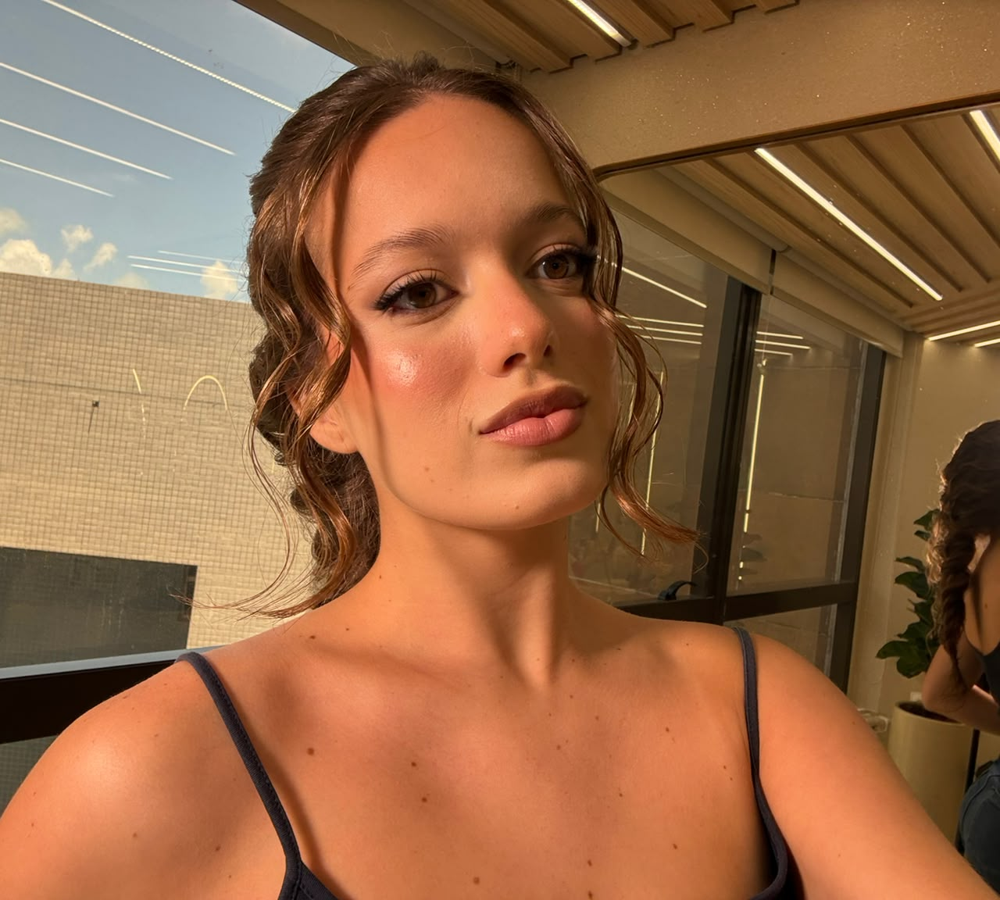

Ana Lucia Juvino
Estudante de Ciência da Computação
Sobre mim
Sou curiosa por natureza, gosto de aprender coisas novas, criar, explorar ideias e viver experiências diferentes. Tenho muitos interesses, adoro boas conversas, conhecer pessoas e estou sempre descobrindo algo novo. Gosto de desafios, de mudanças e de me jogar de cabeça naquilo que desperta meu interesse. Valorizo as conexões verdadeiras e gosto de encontrar um pouco de mim em tudo o que faço.
Como escolhi Ciência da Computação?
Durante muito tempo, me imaginei seguindo uma carreira na área da saúde. Sempre tive o desejo de ajudar pessoas, cuidar, resolver problemas e fazer a diferença na vida de alguém. Psicologia e Medicina foram profissões que considerei com muito carinho.
No terceiro ano do ensino médio, comecei a refletir sobre meu futuro e percebi que, embora me identificasse com os propósitos da área da saúde, não me enxergava na rotina dessas profissões.
A tecnologia, até então, era uma possibilidade que eu nunca havia considerado. Depois de pesquisar, conversar com pessoas da área e buscar orientação, decidi dar uma chance à Ciência da Computação. Foi uma decisão rápida, mas que tomei com disposição para tentar e fazer dar certo.
O início foi completamente novo e desafiador, mas, aos poucos, fui me identificando cada vez mais com o curso. Hoje, sou apaixonada pela área e pelas possibilidades que ela oferece. Entendi que os valores que sempre me acompanharam não pertencem a uma profissão específica: eles fazem parte de quem sou e da maneira como conduzo tudo o que faço.
Sobre a página
Esta página foi desenvolvida como uma atividade acadêmica com o objetivo de praticar os conhecimentos adquiridos em HTML e CSS. Por meio dela, pude trabalhar a estruturação de conteúdos, a utilização de imagens, links e a personalização de elementos visuais.